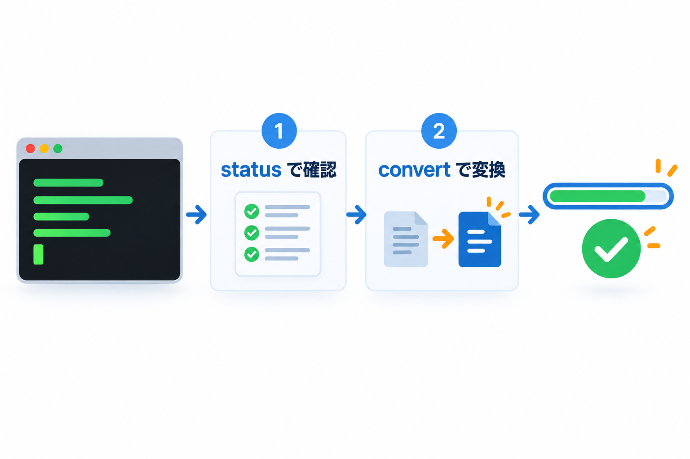

コマンドでの操作
サーバーで WordPress のコマンド（WP-CLI）を使える場合は、コマンドで変換したり、状況を確かめたりできます。画像が多いサイトの最初の変換に向いています。

コマンドの一覧
| コマンド | 内容 |
|---|---|
wp kashiwazaki-next-gen-images status | 状況を表示します。このサーバーで作れる形式、画像の数・変換済み・失敗の数、形式ごとのファイル数と容量の変化を表示します |
wp kashiwazaki-next-gen-images convert | 変換が必要な画像をすべて変換します |
wp kashiwazaki-next-gen-images convert 123 456 | 指定した番号（ID）の画像だけを変換します |
オプション
| オプション | 内容 |
|---|---|
--force | 変換済みの画像も作り直します（画像の番号を指定しないときは、すべての画像）。以前に失敗した画像も試します |
--retry-failed | 以前に失敗した画像（メモリ不足・エンジンのエラーなど、再試行できるもの）も試します |
使い方の例
1
状況を確かめる
wp kashiwazaki-next-gen-images status2
変換する
wp kashiwazaki-next-gen-images convert進み具合のバーが表示され、終わると「Success: Converted ◯ files, ◯ attachments failed, saved ◯.」（変換したファイル数・失敗した画像の数・減った容量）と表示されます。変換する画像が無いときは「Success: Nothing to convert.」と表示されます。
3
画質を変えたあとに作り直す
wp kashiwazaki-next-gen-images convert --force画面の一括変換との違い
コマンドは時間で区切らず、1 回で最後まで処理します。
出てくるメッセージ
| メッセージ | 意味と対処 |
|---|---|
| Warning: ID ◯: （理由） | その画像の変換に失敗しました。理由は英語の短い説明で表示されます |
| Warning: ID ◯: skipped because another process is converting it. | 画面や予約処理が同じ画像を変換中だったため、飛ばしました |
| Warning: ◯ attachments were skipped because another process was converting them. Run the command again. | 上の理由で飛ばした画像の数です。もう一度コマンドを実行してください |
| Error: Could not list the images to convert (database query failed). Nothing was converted. | データベースの一時的な不調で、対象の画像を探せませんでした。何も変換していません。しばらくしてからもう一度実行してください |
| Error: Unknown action. Use: convert | status | コマンドの名前が違います。convert か status を指定してください |